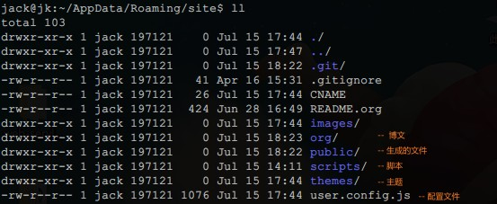
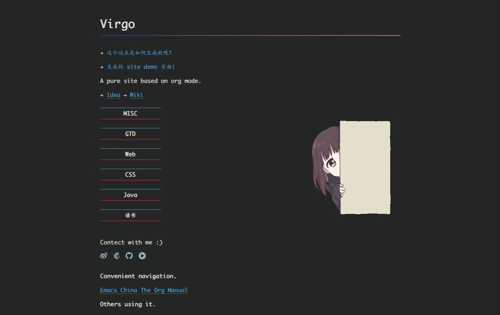
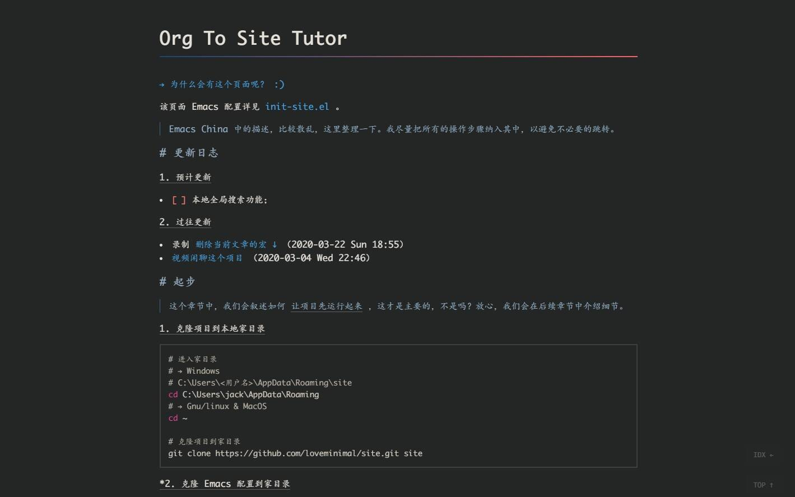

Tutor
Table of Contents
→ 历史说明文档
简介
一款基于 Org mode 的静态博客生成工具。它以 org-publish 为核心，配合一套简约、有效的主题，方便日常记录和知识积累。
快速上手
如果你是第一次访问这个页面，强烈建议先跳转至附录的 网站功能图示 章节，浏览一下站点的功能使用概要 :)
*建议使用 git-bash 进行终端操作
1: # 进入家目录 2: cd ~/AppData/Roaming/ 3: 4: # 克隆 emacs 配置 5: # *注意做好个人的 emacs 配置的备份 6: git clone https://github.com/loveminimal/emacs.d.git .emacs.d 7: 8: # 克隆网站主题 9: git clone https://github.com/loveminimal/loveminimal.github.io.git site 10: cd site 11: git checkout -b source origin/source # 克隆源码 source 分支
启动 emacs 后，打开 site/org/index.org 文件， M-x 执行 preview-current-buffer-in-browser 命令，就可以预览页面效果。
*当然，也可以直接访问线上 个人站点 。
入门篇
环境准备
1: jack@jk:~$ emacs --version 2: GNU Emacs 26.3 3: 4: jack@jk:~$ git --version 5: git version 2.31.1.windows.1
以上为个人桌面环境及软件版本，理论上只要版本跨度不大，就不存在兼容性问题。至于 Emacs 和 Git 的安装，请自行查询，此处不再赘述。
基本使用
我们的项目结构如下：
1.自定义站点信息
关于个人信息的定义，只需要修改 site/user.config.js 文件就可以了，其内容如下：
1: export default { 2: // 博主 3: author: 'Jack Liu', 4: // 如 https://weibo.com/u/6867589681 5: weibo: '6867589681', 6: // 微信二维码，默认位于 `images/` 中 7: wechat: 'bg/wechat.jpg', 8: email: 'loveminimal@outlook.com', 9: // 如 https://github.com/loveminimal 10: github: 'loveminimal', 11: // 如 https://space.bilibili.com/11608450 12: bilibili: '11608450', 13: icp: '豫ICP备19025929号', 14: // 指定卡片风格页面 15: // 当 `activeAll` 为 `true` 时，所有页面激活卡片风格 16: // 另外，当你的文件名以 `*-card.org` 这样的格式结尾时，也会激活卡片风格 17: card: { 18: activeAll: false, 19: pages: [ 20: 'idea', 21: 'wiki', 22: ], 23: }, 24: // 加密的页面 25: encrypt: { 26: password: '123456', 27: // 你的私有页面 28: pages: ['foo', 'bar'], 29: }, 30: // 不显示评论的页面，首页默认不显示 31: nonvaline: ['nav', '404'] 32: };
2.编辑博文内容
*注意：
site/org/中，务必保留index.org（首页）、 nav.org（导航）、404.org（错误页）三个文件，内容可以按需修改。
入手使用是非常简单的，你只需要编辑 *.org 文件，在保存后，会自动在 site/public 中生成对应的 *.html 文件。比如，我们的主页 site/public/index.html 就是由 site/org/index.org 文件生成的。
如果，你已经有了 *.org 文件存稿，只需要在文件头部增加以下内容：
1: #+DATE: <2021-07-19 Mon 09:50> # 文章日期 2: #+TITLE: Tutor # 文章标题
并放入到 site/org/ 文件夹中， M-x 执行 save-and-publish-website 命令即可。
手动输入上述内容自然是很繁琐的操作，使用 Yasnippets 这个插件就很方便了。比如，我们创建了 insert header 这个 snippet ，只需要键入
ih并使用TAB展开就可以自动生成了。
3.部署站点
site/public 文件夹中的内容，就是我们在服务器部署站点时的全部所需文件。比如，我们的站点就是部署在 loveminimal.github.io 上的（Hmm..褥 Github 羊毛 😄），可以看到，它就是 public 中的内容。
你可以有创建一个名为 <github_username>.github.io 的仓库，如我的 Github 用户名为 loveminimal ，创建的仓库即为 loveminimal.github.io ，把生成的 site/public 中有内容推送到 <github_username>.github.io 中，稍后，在浏览器中访问 http://<github_username>.github.io 就可以看到你的博文站点了。
进阶篇
扩展准备
1: jack@jk:~$ node -v 2: v12.22.1 3: jack@jk:~$ npm -v 4: 6.14.12 5: 6: # 一个更便捷的响应式服务器（实时更新） 7: jack@jk:~$ live-server -v 8: live-server 1.2.1
安装配置
live-server
live-server 的安装是可选的，完全可以使用 Emacs 配置文件中已经包含的 simple-httpd 服务器插件进行预览。但实际实用过程中，还是建议使用 live-server ，它会根据文件变动实时更新，也方便进行二次扩展和自定义。
下面我们主要来看一下 live-server （可选）的安装及相关配置：
1: npm i -g live-server # 全局安装 live-server 2: 3: # 创建 live-server 的配置文件 4: cd ~ 5: touch .live-server.json
关于 .live-server.json 的内容，如下：
1: { 2: "port": 6600, 3: "host": "127.0.0.1", 4: "root": "/public", 5: "open": true, 6: "file": "index.html" 7: }
如何启动 live-server 呢？
可以直接执行 cd ~/AppData/Roaming/site && live-server --open=public" 命令启动服务器，并打开浏览器。
为了方便在 Windows 系统上启动服务，你也可以创建一个 server.bat 脚本，其内容如下：
1: @echo off 2: %1(start /min cmd.exe /c %0 :& exit ) 3: echo Start your site server... 4: echo ------------------------- 5: :: pause 6: cd C:\Users\jack\AppData\Roaming\site 7: live-server --open=public
如此，每次只需要双击打开运行这个脚本就可以了，上述两种方式的效果是相同的。
Emacs 中的配置
所有用于生成站点的 emacs 配置几乎都在 init-site.el 文件中，你可以使用以下方式引入到你个人的 emacs 配置中使用：
1: (add-to-list 'load-path "<your_path>/init-site.el") ;; 如 ~/.emacs.d/lisp/init-site.el 2: (require 'init-site)
下面我们来看一下该文件中的几个关键函数命令及配置：
| 命令 | 说明 |
|---|---|
save-and-publish-website |
生成站点内容到 public 中 |
save-and-publish-file |
生成或更新当前 .org 到对应的 .html 文件 |
delete-org-and-html |
同时删除当前 .org 文件及其对应的 .html 文件 |
just-delete-relative-html |
仅删除当前 .org 文件对应的 .html 文件 |
preview-current-buffer-in-browser |
预览当前文件对应的页面 |
当然，如果你使用了 live-server ， preview-current-buffer-in-browser 就基本没有用武之地了。
其他配置，可以直接参考 init-site.el 。
在 Emacs 中，我们基本上不用做过多的修改，满足需求就好。
脚本配置
为了更加方便的使用，我们创建了一些简单的运行脚本（务必在 git-bash 中使用，😺 懒得写 powershell 脚本 ），如下：
我们只列出一些常用的脚本及其说明：
| 脚本 | 说明 |
|---|---|
serve.sh |
live-server 服务器的启动脚本 |
rcopy.sh |
同步 public/ 中的静态/逻辑样式文件（图片、js、css）到 site/ 中 |
deploy.sh |
部署到 Github 仓库 |
下面我们来详细说明一下 deploy.sh 如何修改自己可用的，其内容如下：
1: #!/bin/sh 2: # ------------------- 3: # Deploy posts to `loveminimal.github.io` 4: # ------------------- 5: 6: if [ -d "public" ] 7: then 8: # CNAME 中记录的是绑定的域名（用到的时候再了解即可） 9: rm -rf "public/CNAME" && cp -r "CNAME" "public/" # Fix potential error - Recovery `CNAME` before deploy. 10: 11: cp -r "public" "../.temp" 12: cd "../.temp" 13: pwd 14: git init 15: git add . 16: git commit -m "Posts update." 17: git remote add origin https://github.com/loveminimal/loveminimal.github.io.git 18: # git push -f origin master:main 19: git push -f origin master 20: cd .. 21: rm -rf ".temp" 22: cd "site"
只需要修改第 17 行中的仓库地址（即 https://github.com/loveminimal/loveminimal.github.io.git ）为你自己的仓库地址即可。
如何使用这些脚本呢？
使用 git-bash ，进入 ~/AppData/Roaming/site 目录，执行 source scripts/<script_name>.sh 即可，如：
1: cd ~/AppData/Roaming/site 2: source scripts/deploy.sh
FAQ
……
附录
网站功能图示
1. 文章列表
所有文章在主页列表中管理、分类，光标移入/移出表头，用来切换其内容（文章标题）的显示/隐藏。
2. 主题切换
站点提供了亮/暗两种主题模式，所有页面点击文章标题，即可切换。
 3. 目录显隐
光标移入/移出页面左侧（移动端点击页面顶部），用来切换目录的显示/隐藏。
4. 返回主页和回到顶部
右下角，包含两个功能按钮 - IDX ← （返回主页）和 TOP ↑ （返回页面顶部，且滚动时显示当前页面滚动百分比）。
右侧批注样式
其实，使用很简单，我们把要加的批注写在 <div class"jk-note">…</div>= 中就可以了，放心，在渲染的时候已经做好了处理，如下：
1: #+BEGIN_EXPORT html 2: <div class="jk-note"> 3: 这就是批注喽，哈哈，可以充分利用右侧的空间。 4: </div> 5: #+END_EXPORT
原理就是，在 Org Mode 中输出 HTML 片段，指定了自定义的标签 <div class"jk-note">= （用来后续的 DOM 操作）。在浏览器渲染的过程中，无效的标签符并不会做为普通文本绘制出来，但其内的内容却可以。
文内随笔样式
1: #+BEGIN_EXPORT html 2: <div class="jk-essay"> 3: 随笔内容…… 4: </div> 5: #+END_EXPORT
示例效果如下：
沁园春·雪
页面折叠样式
1: #+BEGIN_EXPORT html 2: <div class="jk-drawer"> 3: <div class="collapsible">折叠板标题</div> 4: <div class="content"> 5: 折叠的内容…… 6: </div> 7: </div> 8: #+END_EXPORT
示例效果如下：
沁园春·雪
沁园春·雪
自定义尺寸图片
静态页面的图片输出一直是个让人比较烦扰的问题，在 Windows 上输出指定大小的图片比较不易，我们可以曲线实现，在 .org 文件中插入 Html 标签，如：
#+BEGIN_EXPORT html <img src="images/ost/xxx.jpg" width="60%" /> #+END_EXPORT
如此，便可以指定图片输出的宽高。为了方便，你可以使用 yasnippet 写一个快速插入的 snippet ，如：
# -*- mode: snippet -*-
# name: insert img
# key: ii
# --
#+BEGIN_EXPORT html
<img
src="$1"
width="$2"
style="$3"
alt="$4"
/>
#+END_EXPORT
$5
总结
写文档真的不能一蹴而就 😢 ，慢慢补充修改吧，目前结合 历史说明文档 使用先。